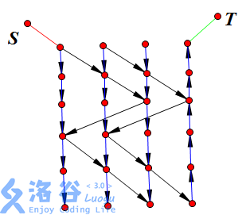
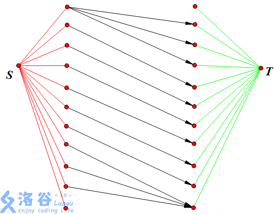
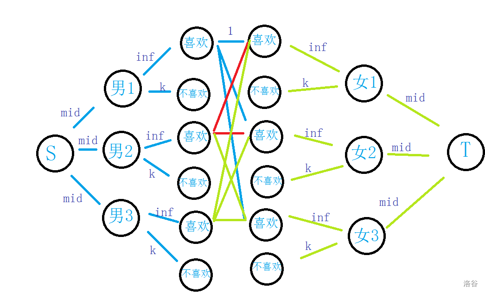

[网络流从入门到入土 #1]
P1345 [USACO5.4] 奶牛的电信Telecowmunication
求割点数，可以拆点。
P1361 小M的作物
题目相当于把一些点放到A一些点放到B ，求获得的最大权值。
相当于总权值减去最小割。
那么两个放在一起的额外权值该怎么解决呢。
如图。

蓝线连的边权值为正无穷。
P2071 座位安排
二分图最大匹配。
P2857 [USACO06FEB] Steady Cow Assignment G
二分答案，再跑最大流。
P5030 长脖子鹿放置
黑白染色，求二分图的最大独立集即可。
P1231 教辅的组成
把一个人拆成两个。
P1344 [USACO4.4] 追查坏牛奶 Pollutant Control
最小损失就是最小割，人数可以考虑再跑一次网络流。
P1402 酒店之王
把一个人拆成两个。
P2057 [SHOI2007] 善意的投票
朋友间连边，意愿连边，求最小割。
P2172 [国家集训队] 部落战争
最小路径覆盖。
P2472 [SCOI2007] 蜥蜴
最少有几只蜥蜴无法逃离=蜥蜴总数-最多有几只蜥蜴能逃离
对于每个点，我们进行拆点，将其拆分为入点和出点，显然它们之间的容量为该格子高度。
P2526 [SHOI2001] 小狗散步
就是最大流，然后求走过那些边。
P2598 [ZJOI2009] 狼和羊的故事
原点连狼汇点连羊，狼羊相邻连边，最大流。
P2754 [CTSC1999] 家园
建立分层图，然后枚举天数。
因为在一个地方的人可以继续待在一个地方所以用分层图。

while(day<maxt){
E.add(s,day*n+2,inf);
E.add(day*n+1,t,inf);
if(day!=0){
for(int i=1;i<=n;i++){
E.add((day-1)*n+i,day*n+i,inf);
}
for(int i=1;i<=m;i++){
int x=c[i][(day-1)%r[i]+1];
int y=c[i][day%r[i]+1];
E.add((day-1)*n+x,day*n+y,h[i]);
}
}
sum+=E.maxflow(s,t);
if(sum>=k)break;
day++;
}
P2762 太空飞行计划问题
题目不说人话
大意：
有\(m\)个实验，
每个实验只可以进行一次，但会获得相应的奖金，有\(n\)个仪器，每个实验都需要一定的仪器，每个仪器可以运用于多个实验，但需要一定的价值，问奖金与代价的差的最大值是多少？
模型：
给定一张图，有左侧的点和右侧的点，左侧的点点权为正（对应试验），右侧的点点权为负（对应器材），如果选择了左侧的某个点就必须要选右边的一部分点。要求最大化点权和。
如果将左侧的点和右侧的点之间对应连边，如果该实验要求该器材就连一条边，那么问题就被转化为了这样一个问题：
给定一个有向图，点有点权，选择一个子图，满足子图上如果选择了一个点就必须选择它后继的所有点。最大化点权和。
这是一个经典的网络流问题，如果一个点被选择了则后继必须被选择，那么称该图是 闭合的，因此该问题叫做最大权闭合子图问题。可以使用最小割解决。
P2763 试题库问题
就是最大流。
P2764 最小路径覆盖问题
把一个点拆成入点和出点。
我们一开始把每个点看做一条路径，考虑路径合并的问题，每两条路径首尾相连接起来是不是路径数就会减一。而我们会要尽量减少它们的数量。
可以合并的点数就是下面图的最大流。

P2774 方格取数问题
遇到不决，先黑白染色。
可以发现，若取一个黑格的点，受到影响的就是周围的白点。
于是我们可以建一个二分图。
然后可以发现这是一个最小割的套路题，假设所有的点都取，然后去掉最小割，就是答案了。
P2891 [USACO07OPEN] Dining G
同样是把一头牛拆开。
P2944 [USACO09MAR] Earthquake Damage 2 G
最小割点。
P3153 [CQOI2009] 跳舞
二分答案。

inline void build(int mid) {
up(i,1,n){
add(i + 1 , n + 1 + ((i - 1) << 1) + 1, inf);
add(n + 1 + ((i - 1) << 1) + 1 , i + 1 , 0);
add(i + 1 , n + 1 + ((i - 1) << 1) + 2 , k);
add(n + 1 + ((i - 1) << 1) + 2 , i + 1 , 0);
for (int j = 1 ; j <= n ; j ++) {
if (like[i][j] == 1) {
add(n + 1 + ((i - 1) << 1) + 1 , n * 3 + 1 + (j << 1) - 1 , 1);
add(n * 3 + 1 + (j << 1) - 1 , n + 1 + ((i - 1) << 1) + 1 , 0);
} else {
add(n + 1 + ((i - 1) << 1) + 2 , n * 3 + 1 + (j << 1) , 1);
add(n * 3 + 1 + (j << 1) , n + 1 + ((i - 1) << 1) + 2 , 0);
}
}
}
for (int i = 1 ; i <= n << 1 ; i ++) {
if (i & 1) {
add(n * 3 + 1 + i , ((i + 1) >> 1) + n * 5 + 1 , inf);
add(((i + 1) >> 1) + n * 5 + 1 , n * 3 + 1 + i , 0);
} else {
add(n * 3 + 1 + i , n * 5 + 1 + (i >> 1) , k);
add(n * 5 + 1 + (i >> 1) , n * 3 + 1 + i , 0);
}
}
for (int i = 1 ; i <= n ; i ++) {
add(1 , i + 1 , mid);
add(i + 1 , 1 , mid);
}
for (int i = n * 5 + 1 + 1 ; i <=t - 1 ; i ++) {
add(i,t,mid);
add(t,i,mid);
}
}
P3410 拍照
最大权闭合图
P3866 [TJOI2009] 战争游戏
最小割点。
P3872 [TJOI2010] 电影迷
最大权闭合图。
P4001 [ICPC-Beijing 2006] 狼抓兔子
是双向边。
P4313 文理分科
建模类似小M的作物。
inline int id(int x,int y){
return (x-1)*m+y;
}
int s=0,t;
int sum;
signed main(){
n=read();m=read();
t=n*m+1;
int x;
up(i,1,n){
up(j,1,m){
x=read();
E.add(s,id(i,j),x);
sum+=x;
}
}
up(i,1,n){
up(j,1,m){
x=read();
E.add(id(i,j),t,x);
sum+=x;
}
}
int tot=n*m+1;
up(i,1,n){
up(j,1,m){
x=read();
E.add(s,++tot,x);
E.add(tot,id(i,j),inf);
if(i!=n)E.add(tot,id(i+1,j),inf);
if(i!=1)E.add(tot,id(i-1,j),inf);
if(j!=m)E.add(tot,id(i,j+1),inf);
if(j!=1)E.add(tot,id(i,j-1),inf);
sum+=x;
}
}
up(i,1,n){
up(j,1,m){
x=read();
E.add(++tot,t,x);
E.add(id(i,j),tot,inf);
if(i!=n)E.add(id(i+1,j),tot,inf);
if(i!=1)E.add(id(i-1,j),tot,inf);
if(j!=m)E.add(id(i,j+1),tot,inf);
if(j!=1)E.add(id(i,j-1),tot,inf);
sum+=x;
}
}
cout<<sum-E.maxflow(s,t);
return 0;
}
P5038 [SCOI2012] 奇怪的游戏
黑白染色，二分答案。
inline bool check(int val) {
E.clear();
int sum = 0;
up(i,1,n) {
up(j,1,m){
if((i+j)%2==0) {
E.add(s,id[i][j],val-a[i][j]);
sum+=val-a[i][j];
up(k,0,3){
int tx=i+dx[k];
int ty=j+dy[k];
if(tx >= 1 && tx <= n && ty >= 1 && ty <= m) {
E.add(id[i][j],id[tx][ty],inf);
}
}
}
else {
E.add(id[i][j],t,val-a[i][j]);
}
}
}
return E.maxflow(s,t)==sum;
}
signed main(){
int T=read();
while(T--){
int cnt=0;
memset(a,0,sizeof a);
memset(id,0,sizeof id);
n=read();m=read();
int nb=0,nw=0,tb=0,tw=0,maxl=0;
t=n*m+10;s=0;
up(i,1,n){
up(j,1,m){
a[i][j]=read();
maxl=max(maxl,a[i][j]);
id[i][j]=++cnt;
if((i+j)%2==0){
nb+=a[i][j];
tb++;
}
else{
nw+=a[i][j];
tw++;
}
}
}
if(tw!=tb){
int x=(nb-nw)/(tb-tw);
if(x>=maxl&&check(x)) {
cout<<x*tb-nb<<endl;
}
else {
cout<<-1<<endl;
}
continue;
}
if(nw!=nb) {
cout<<-1<<endl;
continue;
}
int l=maxl,r=inf,ans;
while(l<=r){
int mid=(l+r)>>1;
if(check(mid)){
ans=mid;
r=mid-1;
}
else l=mid+1;
}
cout<<ans*tb-nb<<"\n";
}
return 0;
}